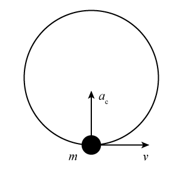
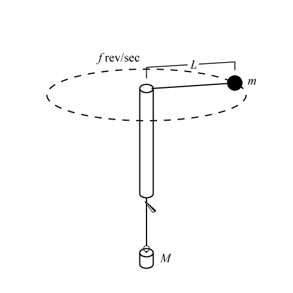
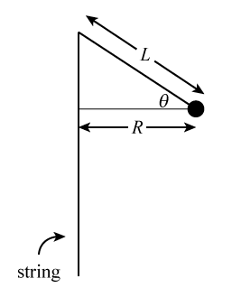
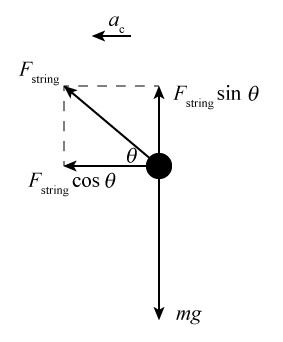

Force and Acceleration in Circular Motion
Introduction
Acceleration is the time rate of change of velocity. Since velocity is a vector, it can change in two ways: its magnitude can change and its direction can change. Either change gives rise to an acceleration. For circular motion at constant speed, the velocity is always tangential to the circular path, and therefore its direction is continuously changing even though its magnitude is constant. Therefore, the object has an acceleration. It can be shown that the magnitude of the acceleration ac for uniform circular motion with speed v in a path of radius R isac =
,
and that the direction of the acceleration is inward toward the center of the circular path. This is illustrated in Figure 1.
| v2 |
| R |

Figure 1
f = 1/T.
Since the object travels a distance 2πR (the circumference of its circular path) in time T the speed v is equal to v =
= 2πRf
and | 2πR |
| T |
ac = 4π2f 2R.
The setup for the experiment is shown in Figure 2. When the plastic tube is moved in a small circle above your head, the racketball moves around in a horizontal circle at the end of a string that passes through the tube and has a mass hanger with slotted masses suspended from its lower end.
Applying ΣF = ma
to the stationary mass hanger gives Fstring = Mg,
where Fstring is the tension in the string and M is the sum of the masses of the mass hanger and the slotted masses that are placed on it.

Figure 2: Experimental setup
R = L cos θ.

Figure 3

Figure 4
ΣFx = max
gives Fstring cos θ = mac = m4π2f 2R.
R = L cos θ
so Fstring = m4π2f 2L.
And, since Fstring = Mg,
then Mg = m4π2f 2L.
Rearranging gives the following equation.
Objective
In this experiment we will test the expression for the acceleration of an object moving in uniform circular motion.Apparatus
- Racketball with string and alligator clip attached
- Plastic tube
- Slotted mass set and hanger
- Balance
- Stopwatch
- Meterstick
Discussion
As discussed in the Introduction for this experiment, application of Newton's second law in the experimental setup yields the following. In this equation, f is the frequency of the circular motion of the ball and m is the mass of the ball. M is the mass suspended from the lower end of the string and L is the length of string between the center of the ball and the center of the upper end of the tube. Note that the angle θ that the string makes with the horizontal does not appear in Eq. (1). Derivation of Eq. (1) assumes that the acceleration of an object moving at constant speed v in a circular path of radius R has magnitudeac =
and direction that is radially inward toward the center of the circular path. In this experiment, we will measure f for several values of M and L. We will use this data to test Eq. (1), and thereby to test the expression for ac and our application of | v2 |
| R |
ΣF = ma.
We will do this by plotting f 2 versus | M |
| L |
Procedure
Please print the worksheet for this lab. You will need this sheet to record your data.
1
For practice, place a slotted mass of 100 grams on the mass hanger at the lower end of the string and whirl the racketball over your head while holding onto the string below the tube. Practice spinning the ball over your head while maintaining the path of the ball completely horizontal, until you can let go of the string below the tube and maintain the same motion while the mass does not rise or fall. Each lab partner should do this exercise.
2
Pull enough string through the tube so the length L is 50.0 cm. Recall that L is the distance from the center of the top of the tube to the center of the ball. Attach an alligator clip to the string about 1 cm below the plastic tube to serve as a marker so you can keep L constant while whirling the ball. As you whirl the ball in a horizontal circle, make sure that the string or alligator clip does not come in contact with your hand or arm. Ensure that the ball is rotating in a horizontal circle before measuring the time. Then have your lab partner measure the time t20(1) it takes for the ball to complete 20 revolutions. Interchange roles of whirler and timer and repeat the measurement to obtain time t20(2). Repeat taking measurements until you get a pair of times that differ by less than 2.0 seconds.
3
Enter your values of t20(1) and t20(2) into the column for M = 150 grams
in Table 1. Note that f1 =
,
| 20 |
| t20(1) |
f2 =
,
and let | 20 |
| t20(2) |
f =
.
Complete the rest of the column. Repeat the procedure for the other sets of M and L values. Remember that M is the total mass suspended from the string, the mass of the hanger plus the mass of the slotted masses placed on the hanger.
| f1 + f2 |
| 2 |
4
Open Excel and plot f 2 (for f in rev/s) versus | M |
| L |
5
Record the slope of the line that is the best fit to your data.
6
Use the balance to measure the mass of the ball. Record your results.
7
Use Eq. (1)f 2 =
, the slope you recorded, and the mass of the ball to calculate g.
 |
| g |
| 4π2m |
 |
| M |
| L |
8
If the actual value of g is taken to be 9.80 m/s2, what is the percentage difference between your experimental result and the actual value of g? In the calculation retain enough significant figures to avoid round-off error.